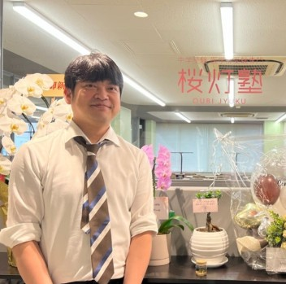

二次試験や共通テストで高得点を取る技をすべて伝授

大阪公立大学専門
教室長
Kenichi Uchida
大阪公立大学専門 桜灯塾が大阪公立大学に圧倒的に詳しい理由は、私たちの講師陣にあります。在籍する30名以上の学生講師はほぼ全員が大阪公立大学医学部医学科の現役学生。推薦入試・一般入試を問わず、実際に合格を勝ち取った本人たちが、共通テストや二次試験の勉強法を惜しみなく生徒に伝えます。
私が10年以上かけて蓄積してきた入試データと、毎年更新される合格者のリアルな情報。この二つが掛け合わさることで、最新の入試傾向を掴みます。さらに、合格するために受験に必要な全科目に介入、通いたい放題で「量」を確保し、対面での指導で勉強の「質」の向上を図ることで、学習管理×量×質で全科目をマネジメントし、合格を目指します。大阪公立大学専門 桜灯塾は他の塾には決して真似できない「大阪公立大学専門」の指導体制を実現しています。
「合格した先輩が、すぐ隣にいる」という環境が、どれほど心強いものか。ぜひ、私たちの教室で体験してください。共に、大阪公立大学の門を叩きましょう。
大阪公立大学専門 桜灯塾が大阪公立大学に強い理由は、情報の「質」と「量」にあります。在籍する30名以上の学生講師はいずれも大阪公立大学医学部医学科の現役学生。2023年度の推薦入試合格者などからも直接ヒアリングを重ね、外部には出回らないリアルな情報を蓄積し続けています。
講師の出身高校実績
大教大天王寺高校
個別試験の攻略に精通
清風高校
数学の徹底対策を指導
四天王寺高校
推薦入試のノウハウを伝授